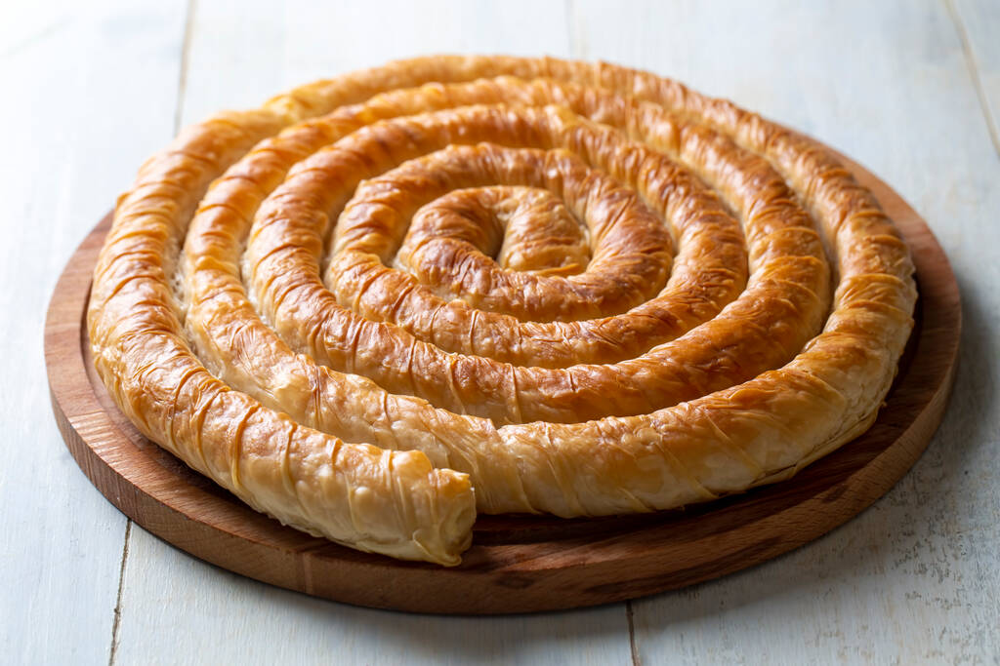

Khachapuri Adjaruli

Description
Burek is a beloved savory pastry found across the Balkans and
the Middle East. Made with delicate layers of phyllo dough
and stuffed with seasoned ground meat, or creamy cheese.
This dish is baked to perfection and served warm.
Ingredients
- Spice:
- 1 tablespoon ground allspice
- 1 tablespoon paprika
- salt and freshly ground pepper to taste
- Vegetable:
- 1 medium potato, finely chopped
- 1 medium onion, chopped
- Meat:
- Dough:
- 16 sheets phyllo dough, thawed
Steps
- Preheat the oven to 400 degrees F (200 degrees C).
- Cook and stir ground beef in a large nonstick skillet over
medium heat until browned and crumbly, 5 to 7 minutes; drain fat. Stir in
allspice, paprika, salt, and pepper. Transfer mixture to a large bowl and
stir in potato and onion.
- Stack two sheets phyllo dough on a work surface. Spoon 1/8
of the beef mixture down one long edge of the stack, then roll phyllo around
filling into a tube. Coil the tube into a snail shape and place onto an
un greased baking sheet. Repeat to make seven more burek, placing finished
coils up against one another to keep them from unrolling. Brush melted
butter over the tops.